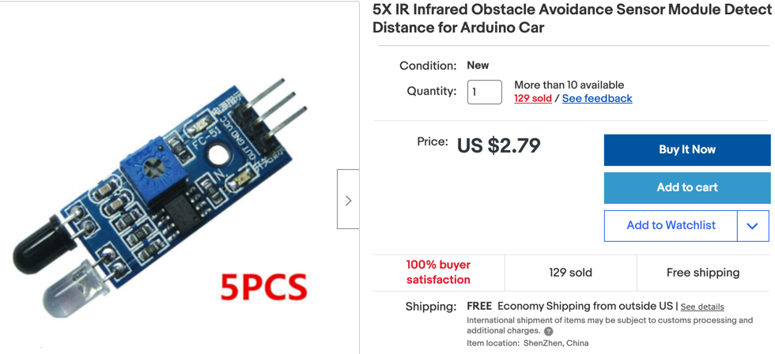

IR Distance Sensors
IR distance sensors are low cost (five for $3) but may have problems working in rooms with outdoor lighting. They have an adjustable potentiometer on them that can be used to adjust a triggering distance call the threshold distance. The sensors return a HIGH signal if there is no object within the threshold distance and a LOW signal if there is an object within this distance. Since the sensor threshold distance can not be adjusted programmatically they are best suited when you can manually adjust the potentiometer to change the threshold.

Connections
These sensors have three wires:
- GND - connect to a ground rail on your breadboard or directly to a GND ping on the Pico.
- VCC - connect to the 5 volt power rail powered by the motor controller voltage regulator
- OUT - a 5 volt digital signal that is usually 5 volts but is GND when triggered by an object
Sample Python Code
1 2 3 4 | |
The KY-032
The KY-032 obstacle avoidance sensor is a four-wire distance-adjustable, infrared proximity sensor designed for wheeled robots. Also known as AD-032.
The sensor detection distance ranges from 2cm to 40cm, it can be adjusted by turning the potentiometer knob. The operating voltage is 3.3V-5V so it is suitable for a variety of microcontrollers like Arduino, ESP32, Teensy, ESP8266, Raspberry Pi, and others.
It has strong adaptability to ambient light and it is fairly accurate to sense changes in the surrounding environment.
Speaker Test
1 2 3 4 5 6 7 8 9 10 11 12 13 14 15 16 17 18 19 20 21 22 23 24 25 26 27 28 29 30 31 32 33 34 35 36 37 38 39 40 41 42 43 44 45 46 47 48 49 50 51 52 53 54 55 56 57 58 59 60 61 62 63 64 65 66 67 68 69 70 71 | |
Full Program
```py from machine import Pin, PWM from utime import sleep import ssd1306
Motor pins to the L293 H-Bridge
RIGHT_FORWARD_PIN = 17 RIGHT_REVERSE_PIN = 16 LEFT_FORWARD_PIN = 18 LEFT_REVERSE_PIN = 19
right_forward = PWM(Pin(RIGHT_FORWARD_PIN)) right_reverse = PWM(Pin(RIGHT_REVERSE_PIN)) left_forward = PWM(Pin(LEFT_FORWARD_PIN)) left_reverse = PWM(Pin(LEFT_REVERSE_PIN))
connections to the three IR distance sensors
left = Pin(8, Pin.IN, Pin.PULL_DOWN) center = Pin(7, Pin.IN, Pin.PULL_DOWN) right = Pin(6, Pin.IN, Pin.PULL_DOWN)
SPEAKER_PIN = 21
create a Pulse Width Modulation Object on this pin
speaker = PWM(Pin(SPEAKER_PIN))
WIDTH = 128 HEIGHT = 64 CS = machine.Pin(1) SCL = machine.Pin(2) SDA = machine.Pin(3) DC = machine.Pin(4) RES = machine.Pin(5) spi=machine.SPI(0, sck=SCL, mosi=SDA) oled = ssd1306.SSD1306_SPI(WIDTH, HEIGHT, spi, DC, RES, CS)
def turn_motor_on(pwm): pwm.duty_u16(65025)
def turn_motor_off(pwm): pwm.duty_u16(0)
def forward(): turn_motor_on(right_forward) turn_motor_on(left_forward)
def reverse(): turn_motor_on(right_reverse) turn_motor_on(left_reverse)
def turn_right(): turn_motor_on(right_forward) turn_motor_on(left_reverse)
def turn_left(): turn_motor_on(right_reverse) turn_motor_on(left_forward)
def sound_off(): speaker.duty_u16(0)
def left_tone(): speaker.duty_u16(1000) speaker.freq(700) # 1 Kilohertz sleep(.5) # wait a 1/4 second sound_off()
def center_tone(): speaker.duty_u16(1000) speaker.freq(900) sleep(.5) sound_off()
def right_tone(): speaker.duty_u16(1000) speaker.freq(600) sleep(.5) sound_off()
def forward_tone(): speaker.duty_u16(1000) speaker.freq(400) sleep(.1) speaker.freq(900) sleep(.1) speaker.freq(1200) sleep(.1) sound_off()
def update_oled(): oled.fill(0) oled.text("CoderDojo Rocks!", 0, 0, 1)
1 2 3 4 5 6 7 8 9 10 11 12 13 14 15 16 17 18 19 20 21 22 23 24 25 26 27 28 | |
0=stopped, 1=forward, 2=turing right, 3=turning left
drive_state = 0 counter = 0 while True: if left.value()==0: print('Left') #left_tone() turn_right() update_oled() drive_state = 2 if center.value()==0: print('Center') center_tone() reverse() update_oled() drive_state = 0 if right.value()==0: print('Right') #right_tone() turn_left() update_oled() drive_state = 3
1 2 3 4 5 6 7 8 9 10 11 12 13 14 15 16 17 18 | |